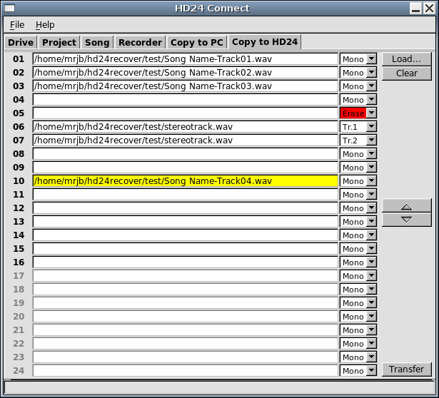

The Copy to HD24 tab offers functionality to copy audio from file to an existing song on the HD24 drive.

The screen shows 24 track slots which correspond to the 24 tracks of the HD24 recorder. When you click the Load... button, a file browsing dialog pops up, which allows you to select the files to load into those track slots. You do not need to worry about the order in which you add the files to track slots; you will be able to correct this later. Selected files will always be assigned to the first empty track slot.
If your file selection contains any files that have more than one track (for instance stereo files), those files will not fit on a mono track. You will be asked what you want to do. You can either assign multi-channel files to several track slots (one slot for each channel that the file contains) or convert the file into mono and assign it to a single track slot.
Next to each channel, you will see a channel action drop-down box. By default, if you split a multi-channel file into multiple tracks, the channel action selection box will assign each respective channel to a track slot. Otherwise, all tracks of the file will be converted to a single mono track. If your files are already mono, they will stay as they are.
If you wish to deviate from this default behaviour, simply select the desired behaviour in the track action drop-down box next to the track slot.
As mentioned, by default files will always be assigned to the first empty track slot. Before starting the transfer, you should check if each file is assigned to the correct track. If this is not the case, you can move files to different track slot. You can do this as follows:
If you wish to overwrite a track with silence, you do not need to select a file. Simply choose Erase as track action in the track action drop-down box on the right of the track slot.
By default, when a track slot is empty, that track will be preserved on the HD24 drive, unless you selected Erase as track action.
To clear a track slot, highlight it by clicking it. Then click the Clear button. This will unload the file from the track slot.
The SMPTE track action will set up a track to be striped with SMPTE/LTC time code. This feature is still experimental and will currently only support 30fps non-drop time code. The time code will always start at zero.
After all is set up for the transfer, click the Transfer button.
Multi-channel transfers are supported. As of HD24tools version 1.0.0, songs are automatically lengthened to fit the files being written to them.
Files will never be resampled prior to a transfer to HD24 drives, even if their sampling rate differs from the sample rate of the song. In the current version, transfers will always start at the beginning of a song. Multi-part transfers to HD24 drives are not currently supported.
Batch transfers to HD24 drives are not currently supported.
Any file format supported by libsndfile for reading can be written to HD24 drives. Bit conversions to 24-bit are performed by libsndfile as needed.